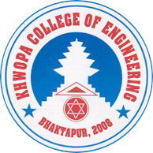

About Me
Hello, I am Sarthak Aganja, based in Ranipauwa - 11, Pokhara, Nepal. I am passionate about connecting the civil engineering world through automation and technology. My goal is to leverage innovative solutions to enhance collaboration and efficiency within the industry. Feel free to reach out for inquiries and collaboration opportunities.
Download CVBackground
I hold a Bachelor's degree in Civil Engineering from Khwopa College of Engineering, Tribhuvan University, Nepal, where I completed my studies from 2016 to 2021. My coursework included a range of general and specialized courses, with electives in Rock Engineering, Rock Slope Engineering, and Environmental Impact Assessment. Prior to this, I completed my Higher Secondary Education at Global Collegiate Higher Secondary School in Pokhara, Nepal, focusing on the Science stream with a major in Mathematics.
Throughout my academic journey, I engaged in various projects that allowed me to apply theoretical concepts in practical settings. Notably, I worked on the structural analysis and design of a multi-storey office building as my final year project, utilizing SAP2000 for analysis and AutoCAD for detailed design and drafting. Additionally, I conducted a project on the comparison of population density per buildup area of the most populated districts using satellite imagery and land use classification, where I performed landuse mapping in Google Earth Engine (GEE) and QGIS using USGS LANDSAT 8 imagery.
Skills
Interests
Outside of coding, I have a passion for:
- Traveling and exploring new cultures
- Playing video games and keeping up with the latest technology trends
- Photography and capturing beautiful moments
Get in Touch
I am always open to networking and collaborating on exciting projects. Feel free to reach out if you share similar interests or have any questions!
Courses & Certifications
-
Course Name: Construction Management Specialization. Awarded by: Columbia University
Certificate URL: 🔗 -
Course Name: Project Management Specialization. Awarded by: Google
Certificate URL: 🔗
-
Course Name: Mechanics of Materials. Awarded by: Georgia Institute Of Technology
Certificate URL: 🔗
-
Course Name: Autodesk Certified Professional: Revit for Architecture. Awarded by: Autodesk
Certificate URL: 🔗
-
Course Name: Materials Science. Awarded by: University Of California
Certificate URL: 🔗
-
Course Name: Mastering Bitumen for Better Roads and Innovative Applications. Awarded by: École des Ponts ParisTech
Certificate URL: 🔗